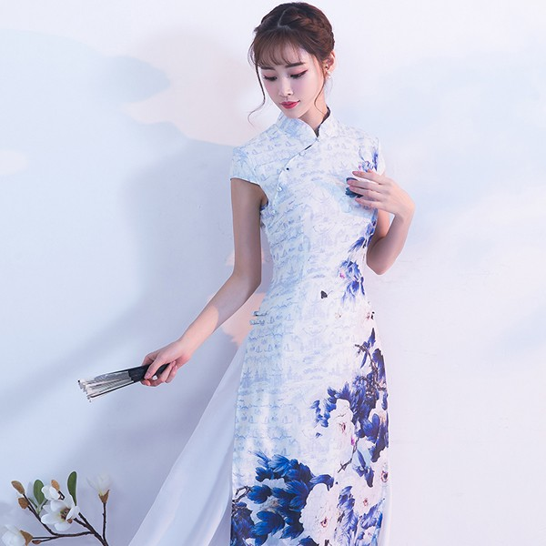

アオザイは長い間伝統衣装であり、ベトナム国民の典型的な文化的特徴でした。歴史の発展の各期間を通じて、アオザイは絶えず変化していますが、それでもベトナムの女性の伝統的な穏やかな美しさを尊重することを保証しています。 次の記事では、参考のために、期間中のベトナムのアオザイの歴史について簡単に紹介します。
Hanbookが韓国の伝統衣装である場合、着物は日本『太陽が昇る国』の民族衣装であり、ベトナムのアオザイは民族のアイデンティティを吹き込んだ文化的な息吹を持つ民族衣装です。アオザイは美人コンテストの衣装に使用され、その美しさを世界各国の人々から賞賛されることを光栄に思っています。
伝統的なアオザイは女性の美しさを否定することはできません。アオザイは、休暇中、講堂などで女性が着用します。 現代のファッションに合わせて、ドレスがリニューアルされました。シャツの一部から、襟・袖・トランク・ボタン、またはパンツを合わせて着用します。